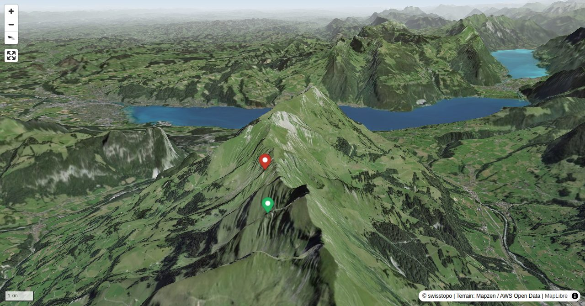

Recht oft begangen, verlangt aber absolute Trittsicherheit und Schwindelfreiheit. Sehr empfehlenswert. Die Etappen können jedoch fast beliebig verlängert oder verkürzt werden.
Die Gehzeit hängt von der Routine auf den ausgesetzten Graten ab.
Quick Facts
| Summit elevation | 2408 m |
|---|---|
| Difficulty | SAC T6 Difficult alpine hiking close to mountaineering terrain. Guide |
| Trailhead | Niesen Bergstation |
| Distance | 15.9 km (out-and-back) |
| Total ascent | ~301 m |
| Elevation range | 779-2407 m |
| Route sources | SAC Route Portal |
Photos


Route Map & Elevation
i
i
sac_scale (precise T1–T6) with
swissTLM3D Wanderwegart
fallback where OSM is silent (coarser T2/T3 and T4+ buckets).
Coverage: OSM 53.5% · swisstopo 30.3% · unknown 0.0%.Elevations computed from the inlined GPX track (SwissTopo height API).
Loading forecast…
3D Terrain View

Route Details
1. Etappe Niesengrat: vom Niesen zum Mäggisserehore
- Die Gehzeit hängt von der Routine auf den ausgesetzten Graten ab.
Terrain & safety
Die grössten Schwierigkeiten sind am NE-Grat zum Fromberghore zu meistern. Ansonsten bewegen sich die Schwierigkeiten zwischen T3 und T5. Seilsicherung am ersten Turm des Fromberghore NE-Grat möglich. Bei Nässe nicht empfehlenswert. Ein Pickel kann gute Dienste leisten.
Source: SAC Route Portal
Getting There & Back
Start: Niesen Bergstation (2397 m)
Directions from to Niesen Bergstation
End: Frutigen (779 m)
Directions from Frutigen back to
Field Reference
| Trailhead | Niesen Bergstation | 46.60420, 7.60490 |
|---|---|---|
| Summit | Niesengrat (2408 m) | 46.63270, 7.62934 |
Coordinates are WGS84 decimal degrees (lat, lon). Emergency: 112 (general) or 1414 (Rega air rescue). Page URL: